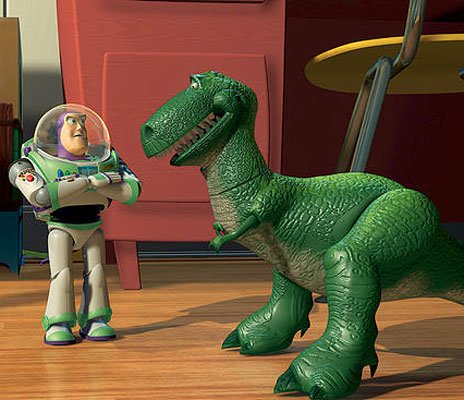
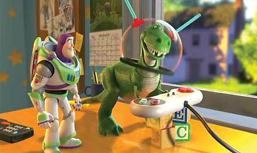
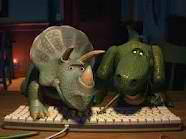
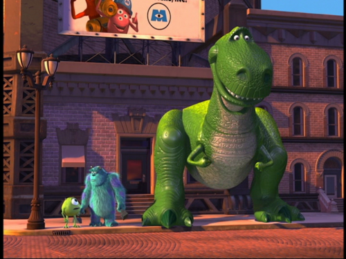

Rex's Toothy Photos
   

Rex is Disney Pixars© most known Tyrannosaurus Rex. He is a totally unstable friendly green guy. Being a child's play toy in the Toy Story© Movies, he is known for his tiny RAWR, short limited arm movement, having a tender heart, & a weak spine. However Rex is one of the most loved toys of all Andy's toys.
In the first Toy Story movie, Rex is scared that his owner Andy will get another dinosaur toy for his birthday. But, Andy ends up getting the well known Buzz Lightyear. Through out the movie Buzz helps the dinosaur gain self confidence and find his big rawr.
Rex starts the movie off in Toy Story 2 Rex takes off the rescue his friend Wood when he is taken during a yardsale by Al McWhiggin. The rescue takes place at Al's Toy Barn. In the beginning of the movie Rex can be seen playing a Buzz Lightyear video game, the rescue of Woody mimics the video game, and Rex is glad that he can be the one to save his friend!
In Toy Story 3 Rex and his friends are thrown off in the toy box and their friend/owner Andy is now grown up and going off to college. They are then mistakenly donated to Sunnyside Daycare were they go through many troubles to make it back to Andy's house. At the daycare Rex has his tail popped off when he is put into a room of children that are too young to play with him and his other toy friends. They toys are then taken to the garbage dump. The toys escape, and then are given to little Bonnie. This is where Rex finally gets his first wish from the first Toy Story. He meets Bonnies Triceratops, Trixie.
As Disney is well known for its cameo use of characters, Rex makes an appearance in the 2001 film Monsters Inc. He first appears at the cross walk with Sulley and Mike. In a blooper outtake during the credits, he appears again trying out for a roll and doesn't get the part, but is replaced by a giant chicken!
During WALL-E Rex makes a very fast appearance in the beginning of the film. He appears in WALL-E's truck hidden behind the bowling pins.